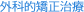
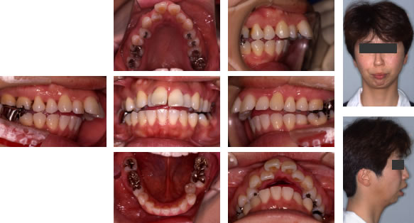
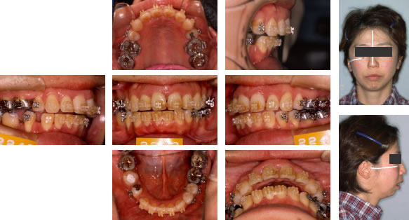
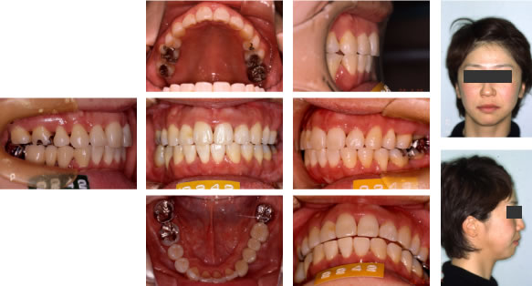
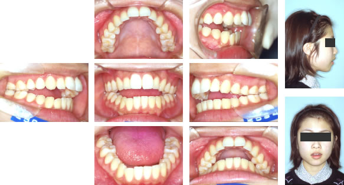
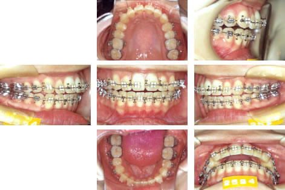
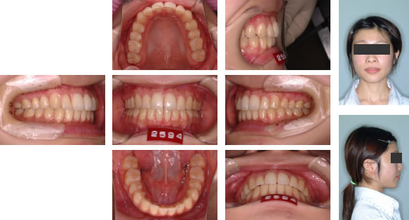

指定自立支援医療機関（育成医療・更生医療） 顎口腔機能診断医療機関


症例1) 上顎前突・開咬：著しい出っ歯を外科的矯正治療で改善した症例
治療前

成人の女性です。下あごの骨が極端に小さく、また、上あごの前歯も出ている、著しい出っ歯の患者さんです。さらに、奥歯でしか歯が接触しておらず、上下の歯に隙間が生じて、食べ物が噛み切れない状態です。その結果、上唇は前方に突出し、下あごは後ろに引けているので唇は自然に閉じることができません。お顔の上の写真のように無理に唇を閉じるとオトガイ（アゴ）の筋肉が盛り上がり、過緊張の状態となります。上下の骨のバランス（主に下顎骨の劣成長）と歯並びの両方の不調和が原因ですので、その両方にアプローチして治療する外科的矯正治療の適応です。
外科的矯正治療は、矯正治療・手術・入院すべて健康保険適応です（顎口腔機能診断施設の認定を受けたクリニックでのみ可能）。
術前矯正終了時

上アゴは左右の第一小臼歯の抜歯を行いました。それに対して、下あごは、生まれつき前歯が一本少ない（先天性欠如）ので、右下の第一小臼歯のみの抜歯を行い、術前矯正を開始しました。
外科手術はすべてお口の中で行いますので、お顔に傷が付くことはありません。また、手術に伴う輸血は、事前に自己血輸血を確保しておきますので安全性を確保しています。
この患者さんは上顎骨形成術（ル・フォーⅠ型骨切り術）にて、上あごの骨を上方に3mm移動させました。下あごの骨は下顎枝矢状分割術により2mm前方に移動させました。さらに、オトガイ形成術により、オトガイ（下あごの先端）の骨を前方に4mm移動させました。
終了時

術後矯正も終了し、このような綺麗な噛み合わせとなりました。前歯で食べ物をかみ切ることができ、奥歯でもよくかみ砕けるようになりました。唇のも自然に閉じることができるようになり、喉のラインも綺麗に改善しました。お顔のバランスも整い、患者さんには大変満足していただいています。このような変化は歯並びだけでは達成することができません。骨にもアプローチしていく外科的矯正治療でのみ、改善していくことができるのです。
症例2) 上顎前突・開咬：上顎骨形成術とオトガイ形成術により噛み合わせを確立した症例
治療前

初診時18歳の女性です。写真のように上下の歯並びが開いており、奥歯（大臼歯）のみでかみ合っています。それは、下あごの骨の本体が小さく後ろに位置しているためです。そのため、発音がしにくく、麺類などの食べ物を前歯でかみ切ることができません。そのため、大変胃に負担がかかっています。
原因は骨にあるので、治療は外科的矯正治療となりました。治療の流れは、まず、手術の前に矯正治療で歯を並べ（術前矯正）、その後、外科手術を行います。手術後、骨が安定したら細かいかみ合わせの調整（術後矯正）を行いました。
外科的矯正治療は、矯正治療・手術・入院すべて健康保険適応です（顎口腔機能診断施設の認定を受けたクリニックでのみ可能）。
術前矯正終了時

術前矯正が終了しました。手術方法は、シミュレーションの結果、上あごの骨の奥を上に移動させる上顎骨形成術（ル・フォーⅠ型骨切り術）により上下の噛み合わせを確保し、オトガイ形成術により、下あごの先端（オトガイ）を前方に移動し、側貌および口唇閉鎖不全の改善を行いました。
治療後

術後矯正も終了し、装置をはずした写真です。前歯でかみ切り、奥歯でかみ砕くことができるようになりました。また、発音も明瞭になり、口を開けて笑うことができるようになりました！骨のバランスも改善され、お口も自然に閉じることができるようになり本人にはとても満足していただきました。
このような顎変形症の外科的矯正治療は口腔外科とのチームアプローチで行われます。手術はお口の中から行いますので、お顔には傷は付きません。さらに、健康保険が適応されています（顎口腔機能診断施設の認定を受けたクリニックでのみです）。